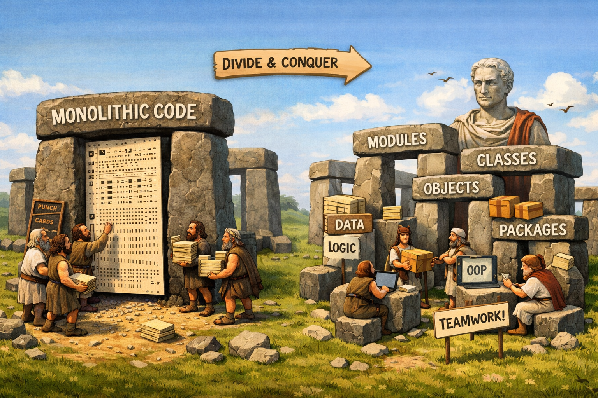
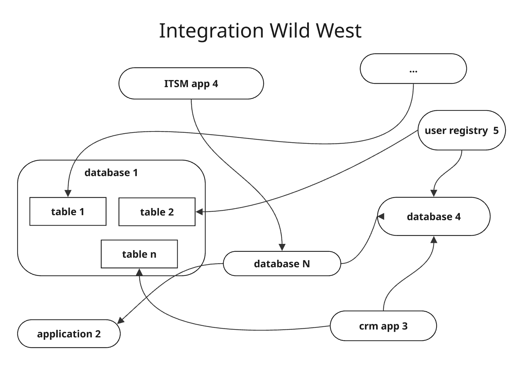
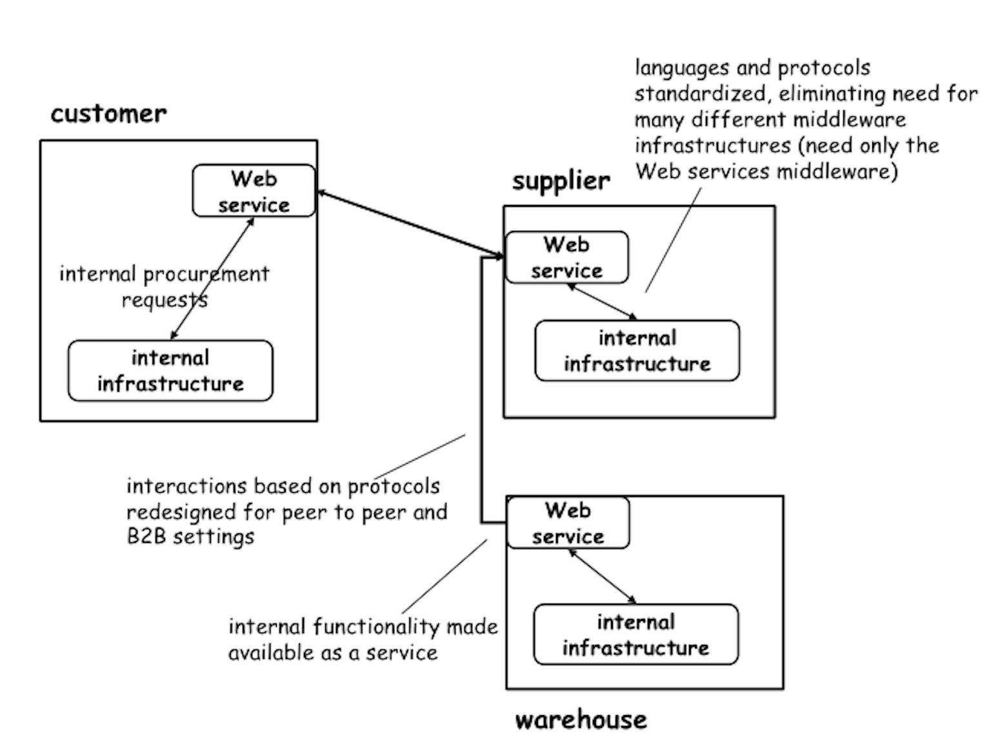
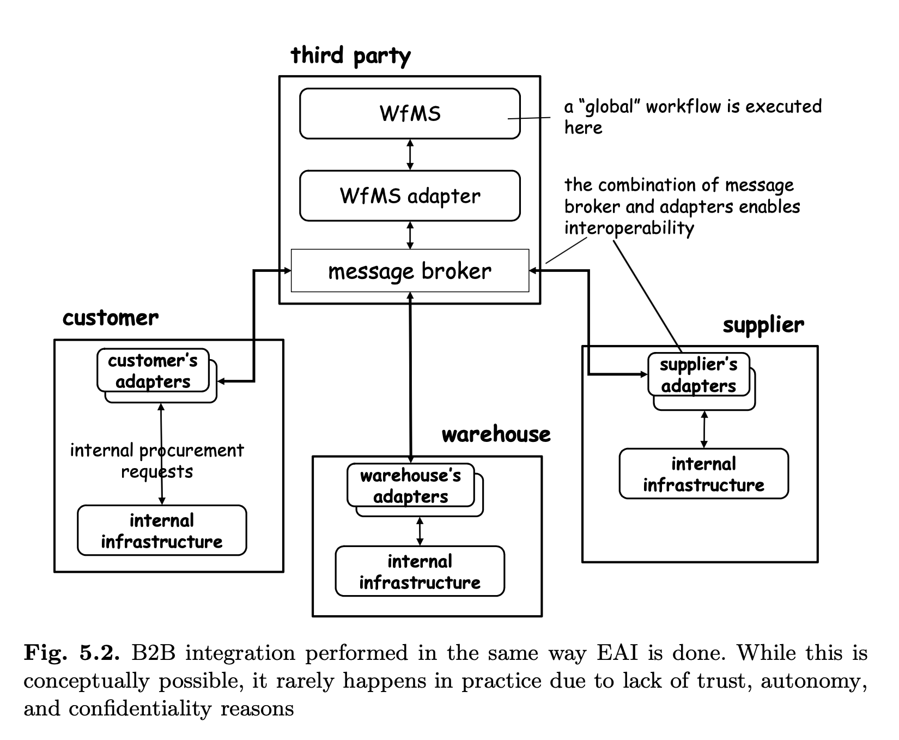
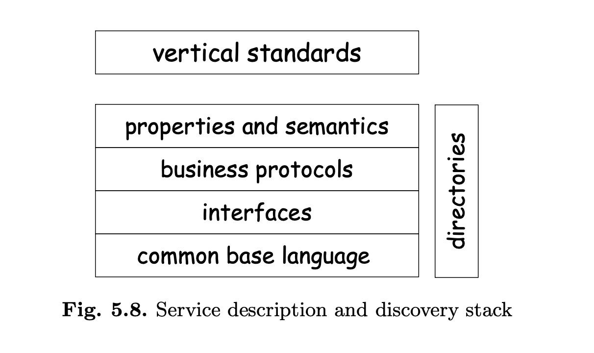
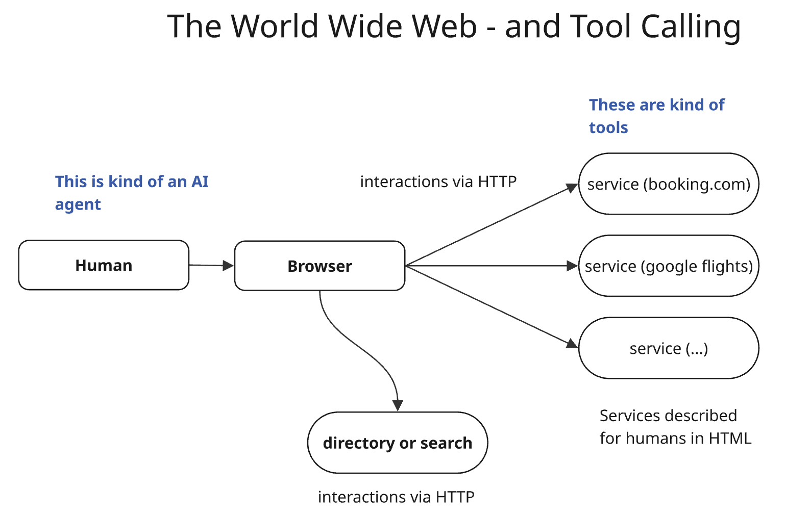
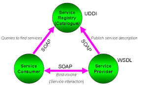
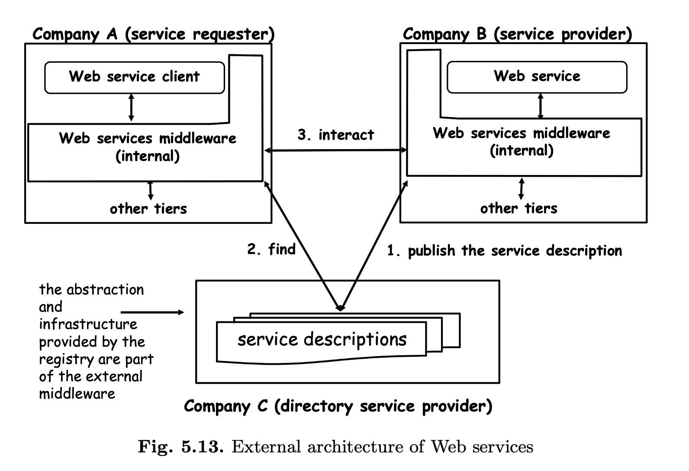

From Service to Agent-Oriented Architectures
Components, Services, Tools and AI
Learning Objectives
This reading focuses on design reasoning rather than framework mastery.
Throughout this piece, we adopt a design perspective on AI systems.
Rather than focusing on specific frameworks or APIs, the goal is to reason about:
- which system-level properties we want from AI-enabled systems,
- which perspectives must be considered when designing them,
- which abstractions help manage complexity and scale,
- and which aspects must be explicitly specified or standardized for systems to be interoperable, safe, and evolvable.
The historical examples and modern tool integrations discussed below are used as concrete anchors for this broader design discussion.
By the end, students should be able to:
- Trace the evolution of abstractions for distributed systems (components → services → tools) and explain why new abstractions emerge when existing ones fail.
- Analyze AI integration from provider and consumer perspectives, including how these differ when the consumer is a human versus an AI agent.
- Explain why some integration standards succeed or fail, using SOAP/WSDL/UDDI vs REST as a case study.
- Distinguish what must be standardized versus what can remain flexible when building AI-enabled systems.
- Identify open problems in AI+tools integration (autonomy, testing, observability) that lack mature abstractions.
Assessment (Course Use)
This reading may be assessed, but assessment is optional when the material is used as a standalone reading.
Assessment focuses on whether students can translate design reasoning into engineering reality.
Students will be evaluated on whether they can design and implement services that are:
Testable
- clear and explicit contracts,
- well-defined inputs, outputs, and error modes,
- behavior that can be validated independently of the AI model.
Observable
- meaningful logging and tracing of tool usage,
- visibility into decisions, failures, and side effects,
- ability to inspect and replay executions.
Autonomous, with explicitly justified boundaries
- clear explanation of what the system may do autonomously,
- where human approval is required,
- and why these boundaries are appropriate.
Guarded
- safety and policy constraints enforced by design,
- protection against misuse, prompt injection, or unintended side effects,
- explicit handling of failure and uncertainty.
The emphasis is not on using a specific framework, but on demonstrating sound system design choices and the ability to reason about their implications.
A note on terminology
In this essay, we use the following terms with specific intent:
- Component — A unit of functionality used within a system boundary, typically invoked in-process (e.g., libraries, modules, classes).
- Service — A remotely accessible capability exposed across a network boundary, with an explicit interface and independent lifecycle.
- API — A contract describing how a service or component can be invoked, including inputs, outputs, and interaction patterns.
- Tool — A callable capability exposed to an AI system or agent runtime, typically wrapping a service or API, and designed to be invoked programmatically by a model rather than a human.
- Agent — An AI-driven system that can reason over goals, decide when to invoke tools, and orchestrate actions over time, potentially with limited autonomy.
These distinctions are not absolute, but they are useful for reasoning about system design, responsibilities, and where explicit contracts and safeguards are required.
From monolithic software to modules and classes
In the beginning, software was a monolith. We had code written on punching cards.
Then, with storage and data transfer we could write programs that consist of many lines of code and run them repeatedly.
Computers got bigger, programs got bigger too. With that we had to organize the code. Why? Because we need to manage complexity, and as Julius Caesar showed us, we do so by divide and conquer.

From monolithic code to modular software: divide and conquer enables teamwork.
As complexity grows, we need teams to write software. Therefore we naturally need to divide the work using modules, packages, objects, classes, and other abstractions.
What these abstractions have in common is a desire to encapsulate logic and minimize coupling so that it was possible to evolve each component while keeping the overall code working.
With multi-person teams classes and modules also allow to divide responsibility while keping a clear and clean "contract" across teams.
Internally, communication about features and interfaces was provided via documentation, oriented to developers.
Versions were managed somewhat ad hoc from a conceptual perspective and, in practice, by working on a shared repo via some variations of git. The layer of "standardization" was mostly defined by the programming language: all components were in C++, or in Java, and the compiler knew how to put pieces together.
Services
With the internet it becomes possible to offer functionality over the net (internally, as an intranet - but also externally). People started building more and more complex "stuff" - and by stuff here I mean also databases and all sorts of resources - and providing access to them on the fly, without the need of packaging and releasing software.

Before standardization: every integration required custom protocols and middleware.
Initially the ability to access resources created massive confusion. Teams built point-to-point integrations, shared databases directly, and created tight coupling that made systems brittle and change expensive.
In other words, everybody was offering and using "services", also - and mainly - internally, often without knowing they were doing so. Something was accessible and therefore it became accessed. When you have code by team A accessing code or data from team B, you do need coordination, just like you need it when you are consuming a class built by another team. This is even more so id you are exposing data as well as structural or implementation detail that you as a dev team need to be able to modify without breaking other services.
The Bezos API Mandate (circa 2002)
This chaos led to dictats such as the famous Jeff Bezos memo at Amazon:
1. All teams will henceforth expose their data and functionality through service interfaces.
2. Teams must communicate with each other through these interfaces.
3. There will be no other form of interprocess communication allowed: no direct linking, no direct reads of another team's data store, no shared-memory model, no back-doors whatsoever. The only communication allowed is via service interface calls over the network.
4. It doesn't matter what technology they use. HTTP, Corba, Pubsub, custom protocols — doesn't matter.
5. All service interfaces, without exception, must be designed from the ground up to be externalizable. That is to say, the team must plan and design to be able to expose the interface to developers in the outside world. No exceptions.
6. Anyone who doesn't do this will be fired.
This memo crystallized the notion of service and the importance of providing access to data and functionality via a relatively stable interface that provides a "contract" between service providers and consumers.
The key insight was not technical — it was organizational: treat every consumer as if they were external, even internal teams. This forces clean boundaries and explicit contracts.
At this time we also have the birth and rise of SaaS applications and vendors — which appeared like magic to many customers. Simple things, such as the ability to rename a column on an ITSM application, felt incredible to customers used to packaged software upgrade cycles.
Service-oriented Architectures
While components were managed by the same org, now services are priovided both internally and externally. This proliferation of service gave rise to the notion of Service-Oriented Architectures. The core idea here was to deliver functions via some sort of "stable" interface (people used horrible terms such as "well-defined"). The opportunity was for service providers to offer access to their services over the web and for consumer to use such services.
Some of the concepts around SOA are described in the book below - now old, but with many concepts still applicable because it was built to survive trends (but not AI and LLMs...)
No words can describe such an awesome work of art and science.
Back then, it was still legal to use Comics Sans as a font, and so many pictures used it.

Web services standardize protocols, eliminating the need for many different middleware infrastructures. Internal functionality becomes available as a service.

While B2B integration via message brokers is conceptually possible, it rarely happens in practice due to lack of trust, autonomy, and confidentiality.
The kind of questions we needed to ask - and answer - back then are similar to the ones we need to ask now:
- what do we need for services to be able to interact?
- how can we do so reliably and in a manner that is robust to change, errors, and to the vagaries of the average, distracted developer?
- what opportunites should we capture? how to maximize the potential?
- which kind of specifications, agreement ("standard"), abstractions, middleware and "best" practices do we need?
Correspondingly, this opportunity gave rise to the question: how do we facilitate exposing services? how do we facilitate consuming services?
Description, Discovery, Interaction
At first, developers started tackling service description, discovery and interaction.
As we move across the net, and away from the notion of one compiler bundling code together, the question becomes:
- How do we describe services so that other people can use them?
- How does the communication take place?
- How do we become aware of the existence of services?

(ca year 2004): The layers needed for service interoperability: common base language, interfaces, business protocols, properties and semantics — plus directories for discovery.
The problems applies both to machines and humans. First, it was "solved" for humans.
And this is interesting, as humans are more or less intelligent agents! So there may be lessons we can take.
Humans can access services via html sent over http. They become aware of the service via ads or web search. And they consume it based on their own intelligence, or lack thereof. The HTML page desrcibes to a human how to use the service.
A new version simply meant a new web pages, which is served via reload of the page. Because the consumer is a human, changes are ok as long as they are not too confusing for humans. A/B testing was also used to understand which human interface was more condusive of higher usage, hence the orange-colored buttons we now see.

The World Wide Web as some early version of tool calling
Back then the direction towards automation did not include AI. Most interactions were human to service and service to database, with the occasional information aggregator.
Infornation aggregation happened via either humans (you are the aggregator) or APIs/SOA.
For SOAs, the question is - what if we want to offer a service to be consumed by a program, or, what if we want to consume such a service. With programmatic access we have both opportunities and problems. A problem is that our client software may not be able to understand the HTML and how to use the service. An opportunity is that in theory we could, as a client, scan for services automatically (e.g., airline reservation services), identify at run time the one that best fits our need, and call it — at scale.
To solve the problems and capture the opportunities, companies came up with "standards" — specifications that they hoped would become standards. Prime examples were SOAP, WSDL, and UDDI. It is very informative to study what they were trying to specify, why, and why they failed.
SOAP, WSDL, and UDDI: The First Odd Attempt at Machine-to-Machine Services

The classic web services triangle — Service Registry (UDDI) for discovery, WSDL for description, SOAP for communication.
- SOAP — addressed the communication problem (XML message format) — see example
- WSDL — addressed the description problem (machine-readable API docs) — see example
- UDDI — addressed the discovery problem (global registry) — see example

Fig (2004): The external architecture of web services — providers publish descriptions to a registry, requesters find and then interact with providers.
The vision was compelling: a world where software could automatically discover services, understand how to call them, and integrate on the fly. Dynamic, loosely coupled, language-agnostic integration.
These specifications did not fail technically — they failed practically.
The main aspect to keep in mind is that average developers are average. One is almost tempted to say that average programmers are below average, and we wrestle with math and statistics on this one. But the fact is that if a "standard" (horrible name — there is no such thing — there are specifications and adoption of specifications) is intended for humans, it has to be simple. Nobody can hope that millions of humans read complex specs and understand them — correctly, and in the same way. Even if we "just" hope that developers will implement clients to simplify work for humans, simplicity matters and facilitates adoption.
- Complexity killed adoption. SOAP messages were verbose. WSDL files were notoriously difficult to read and write. The tooling was fragile. What was supposed to simplify integration often made it harder. Developers found themselves debugging XML namespaces instead of building features.
- The discovery dream never materialized. UDDI assumed that services would be published to public registries and discovered dynamically. In practice, companies did not want to advertise their internal services publicly, and the trust model for dynamic discovery was never solved. You do not just call an airline reservation service you discovered in a registry — you negotiate a contract, agree on SLAs, exchange credentials.
- REST won by being simpler. While the enterprise world debated WS-* specifications (WS-Security, WS-ReliableMessaging, WS-AtomicTransaction...), developers started building APIs with plain HTTP and JSON. REST had no formal specification — just conventions. You could understand it by looking at examples. It was good enough, and good enough won.
Part of the problem was also XML: reading XML is a nightmare, and maybe if JSON were a thing back then, they would have been more successful.
What happens in the end is that developers did not really adopt these specs. instead, they "used REST"
In fact, REST is a non-standard — using REST means using nothing, pretty much. It's HTTP. Somehow people felt cool because they then found some consistency on when to use GET vs POST vs DELETE and maybe PUT, but nobody cared too much about that, either.
So what we have instead of WSDL is web pages that describe APIs. Yes, there are attempts to "standardize" but they never went that far or became that useful. In the end you have developers (that is, humans) reading specs on web pages and implementing clients that call the service.
Versioning was handled in an ad-hoc way, sometimes by adding version numbers to APIs. SaaS vendors grew increasingly allergic to maintaining many versions and developed a tendency to push clients on the latest versions rather than maintaining loads of versions active.
The lesson here is important for AI integration: standards succeed when they reduce friction, not when they maximize expressiveness. A protocol that is easy to adopt beats a protocol that is theoretically complete. Or at least that was the case in the past.
Continue to Part 2: The Shift